기계정비산업기사 (2014-03-02 기출문제)
1과목: 공유압 및 자동화시스템
1. 공압 포핏식 밸브의 단점으로 옳은 것은?
- 이물질의 영향을 잘 받는다.
- 윤활이 필요하고 수명이 짧다.
- 짧은 거리에서 개폐를 할 수 없다.
- 다방향 밸브일 때는 구조가 복잡해진다.
(정답률: 74%)

2. 다음 기호의 명칭으로 옳은 것은?
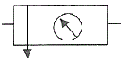
- 루브리케이터
- 공기압 조정유닛
- 드레인 배출기
- 기름분무 분리기
(정답률: 71%)
3. 그림에서 A측에 압력 50kgf/cm2의 유압유를 12L/min 씩 보낼 때 동력(힘)은 약 몇 Nㆍm/s 인가?
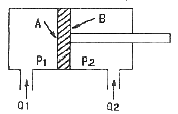
- 1
- 5
- 10
- 15
(정답률: 54%)
4. 유압실린더의 지지형식에 따른 기호에 해당되지 않는 것은?
- LA
- FA
- LC
- TC
(정답률: 65%)
5. 무부하 회로를 사용하는 이유로 적당하지 않은 것은?
- 유온의 상승방지
- 펌프의 수명 연장
- 장치의 가열방지
- 펌프의 구동력 증가
(정답률: 76%)
6. 유압 카운터 밸런스 회로의 특징이 아닌 것은?
- 부하가 급격히 감소되더라도 피스톤이 급발진 되지 않는다.
- 카운터 밸런스 밸브는 릴리프 밸브와 체크 밸브로 구성되어 있다.
- 이 회로는 실린더 포트에 카운터 밸런스 밸브를 병렬로 연결시킨 회로이다.
- 일정한 배압을 유지시켜 램의 중력에 의해서 자연 낙하하는 것을 방지한다.
(정답률: 74%)
7. 다음 기호의 명칭으로 옳은 것은?
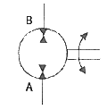
- 기어 모터
- 정용량형 펌프ㆍ모터
- 공기 압축기
- 가변용량형 펌프ㆍ모터
(정답률: 72%)
8. 압축공기 중에 포함된 수분을 제거하기 위한 공기 건조기의 건조방식이 아닌 것은?
- 냉동식
- 흡수식
- 흡착식
- 압력식
(정답률: 66%)
9. 유압펌프 전체송출량의 작동유가 필요하지 않게 되었을 때 오일을 저압으로 하여 탱크에 귀환시키는 회로는?
- 시퀀스 회로
- 신호설정 회로
- 언로드 회로
- 저압제어 회로
(정답률: 67%)
10. 공압모터에 관한 설명으로 적절치 못한 것은?
- 윤활기를 반드시 설치하여야 한다.
- 고속회전이나 저온에서 사용할 경우 빙결(氷結)에 주의한다.
- 밸브는 될 수 있는 한 공압모터에서 멀리 떨어지도록 설치한다.
- 배관 및 밸브는 될 수 있는 한 유효 단면적이 큰 것을 사용한다.
(정답률: 74%)
11. 유압 작동유 중 공기의 침입으로 발생하는 현상은?
- 작동유의 과열
- 토출유량의 증대
- 비금속 실의 파손
- 실린더의 뷸규칙적 작동
(정답률: 77%)
12. 비상업무처리를 위한 기능으로, 어떤 특정의 입력이 들어왔을 때, 즉시 응답되는 제어동작을 수행하도록 요구하는 용도로 쓰이는 것은?
- 병행 처리 기능
- 싸이클릭 처리 기능
- 시퀀스 처리 기능
- 인터럽트 처리 기능
(정답률: 70%)
13. 메모리 기능이 없고 여러 입ㆍ출력 요소가 있을 때는 논리적인 해결을 위해 부울 대수가 이용되므로 논리제어 라고도 하는 것은?
- 조합제어
- 파일럿 제어
- 시퀀스 제어
- 메모리 제어
(정답률: 67%)
14. 일반적인 공압 단동 실린더의 최대 행정거리는 얼마인가?
- 10 mm
- 50 mm
- 100 mm
- 200 mm
(정답률: 79%)
15. 설비의 신뢰성을 나타내는 척도가 아닌 것은?
- 신뢰도
- 최대고장수리시간
- 고장률
- 평균고장간격시간
(정답률: 76%)
16. 그림과 같은 논리회로도의 명칭은?
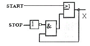
- 계수 회로
- 셋우선 자기유지회로
- 시간지연회로
- 리셋우선 자기유지회로
(정답률: 63%)
17. 하드 와이어드한 제어(릴레이 제어)와 소프트 와이어드한 제어(PLC제어)의 차이점에 대한 설명으로 옳지 않는 것은?
- 릴레이 제어의 경우 회로도는 배선도이다.
- 제어 내용의 변경이 용이한 것은 PLC 제어이다.
- 릴레이 제어가 PLC 제어의 경우보다 배선이 간단하다.
- 소프트웨어와 하드웨어 구성을 동시에 할 수 있는 것이 PLC제어이다.
(정답률: 81%)
18. 핸들링 중 직선적으로 부품이 이송되며 작업이 수행되어 지는 핸들링은?
- 리니어 인덱싱 핸들링
- 로터리 인덱싱 핸들링
- 수평 로터리 인덱싱 핸들링
- 수직 로터리 인덱싱 핸들링
(정답률: 66%)
19. 검출 물체가 센서의 작동 영역(감지거리 이내)에 들어 올때부터 센서의 출력 상태가 변화하는 순간까지의 시간 지연을 무엇이라 하는가?
- 동작주기
- 초기지연
- 복귀시간
- 응답시간
(정답률: 79%)
20. 공압모터 중 3~10개의 회전날개를 갖고 있으며 정ㆍ역회전이 가능한 공압 모터는?
- 베인모터
- 기어모터
- 터빈모터
- 피스톤모터
(정답률: 73%)
2과목: 설비진단관리 및 기계정비
21. 2대의 기계가 각각 90dB의 소음을 발생시킨다면 2대가 동시에 동작할 때의 소음도는 얼마인가?
- 90 dB
- 93 dB
- 135 dB
- 180 dB
(정답률: 83%)
22. 정비의 시기에 맞추어 필요한 예비품을 준비해 두어야 하는데 해당되는 예비품이 아닌 것은?
- 부품 예비품
- 부분적 세트(set) 예비품
- 연료 예비품
- 라인 예비품
(정답률: 67%)
23. 예방보전의 효과가 가장 높을 때는?
- 설비를 새로 제작하여 시운전 할 때
- 설비가 유효 수명 내에서 정상 가동 중일 때
- 설비가 유효 수명을 초과하여 가동 중일 때
- 새로운 원료를 투입할 때
(정답률: 76%)
24. 컴퓨터를 이용한 설비 배치기법이 아닌 것은?
- PERT/CPM
- CRAFT
- CORELAP
- ALDEP
(정답률: 68%)
25. 설비 열화의 측정, 열화의 진행 방지, 열화의 회복을 위한 제조건의 표준은?
- 설비성능 표준
- 설비보전 표준
- 보전작업 표준
- 시운전 검수표준
(정답률: 67%)
26. 설비의 제1차 건강진단 기술로서 현장 작업원이 수행하는 기술은?
- 간이진단 기술
- 정밀진단 기술
- 고장해설 기술
- 응력해석 기술
(정답률: 88%)
27. 윤활제 중 그리스의 상태를 평가하는 항목이 아닌 것은?
- 주도
- 점도
- 이유도
- 적하점
(정답률: 61%)
28. 설비관리의 목표인 생산성을 나타내는 것은?
- 투입/산출
- 산출/투입
- 제품생산량/보전비
- 보전비/제품생산량
(정답률: 62%)
29. 일정한 정점에 대하여 다른 정점의 순간적인 위치 및 시간의 지연을 나타내는 것은?
- 변위
- 위상
- 댐핑
- 주기
(정답률: 55%)
30. 산소가스를 압축할 때 사용하는 윤활제는?
- 점도가 높은 압축기유를 사용한다.
- 점도가 낮은 압축기유를 사용한다.
- 황 성분이 적은 윤활유를 사용한다.
- 급유를 하지 않거나 물을 사용한다.
(정답률: 67%)
31. 보전작업표준을 설정하고자 할 때 사용하지 않는 방법은?
- 작업 연구법
- 경험법
- 실적 자료법
- 공정 실험법
(정답률: 69%)
32. 시스템에 공진상태가 존재할 때 제거하는 방법이 아닌 것은?
- 회전수를 변경한다.
- 기계의 강성과 질량을 변경한다.
- 고유진동수와 일치한 주파수와 강제진동을 가한다.
- 우발력을 없앤다.
(정답률: 74%)
33. 다음 그림은 설비관리 조직 중에서 어떤 형태의 조직인가?
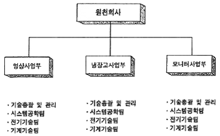
- 제품중심 조직
- 기능중심 조직
- 제품중심 매트릭스 조직
- 설계보증 조직
(정답률: 72%)
34. 설비투자에 대한 경제성 평가방법에 해당되지 않는 것은?
- 비용 비교법
- 자본 회수법
- MTBF 법
- MAPI 법
(정답률: 70%)
35. 센서 고정방법 중 주파수 영역이 넓고 정확도가 가장 좋은 것은?
- 나사 고정
- 손 고정
- 밀랍 고정
- 마그네틱 고정
(정답률: 82%)
36. 진동 소음에 관한 설명으로 옳은 것은?
- 공진은 고유진동수와 상관없다.
- 이론상으로 차움벽 무게를 2배 증가시키면 투과 손실은 6dB정도 증가한다.
- 투과손실은 반사값만 계산한다.
- 소음은 진동과 전혀 상관없다.
(정답률: 84%)
37. 설비보전 관리시스템과 지속적인 개선을 위한 사이클로 맞는 것은?
- P(계획)-A(재실시)-C(분석)-D(실시)
- P(계획)-A(재실시)-D(실시)-C(분석)
- P(계획)-D(실시)-A(재실시)-C(분석)
- P(계획)-D(실시)-C(분석)-A(재실시)
(정답률: 83%)
38. 설비의 기술적 표준으로서 설비의 공통요소와 설비능력 계산방식의 기준 등을 표시하는 것은?
- 설비설계 규격
- 설비성능 표준
- 설비보전 표준
- 보전작업 표준
(정답률: 44%)
39. 보전효과 측정방법에서 항목에 따른 공식이 잘못된 것은?
- 설비가동률=가동시간/부하시간 ×100
- 고장강도율=고장정지시간/부하시간 ×100
- 고장도수율=고장건수/부하시간 ×100
- 예방보전수행률=고장수리시간/예방보전건수 ×100
(정답률: 57%)
40. 기계진동의 발생에 따른 문제점으로 관련이 적은 것은?
- 진동체에 의한 소음 발생
- 기계가공 정밀도의 저하
- 기계의 수명 저하
- 고유진동수의 증가
(정답률: 75%)
3과목: 공업계측 및 전기전자제어
41. 2개 이상의 논리변수들을 논리적으로 합하는 연산으로서 논리변수 중에서 어느 것이라도 “1”이면 그 결과가 “1”이 되는 논리연산은?
- NOT 연산
- OR 연산
- AND 연산
- NOR 연산
(정답률: 79%)
42. 다음 전력 증폭기 중 효율이 가장 높은 것은?
- A급 전력증폭기
- AB급 전력증폭기
- B급 전력증폭기
- C급 전력증폭기
(정답률: 67%)
43. 0.002[㎌]콘덴서 2개를 병렬로 연결하여 100[V] 전압을 가할 때 전 전하량[μC]은?
- 0.04
- 0.4
- 0.2
- 0.1
(정답률: 58%)
44. 와류식 유랑계는 유량에 비례한 주파수에 의해 체적유량을 측정할 수 있다. 안정한 와류를 발생시키는 조건은? (단, 와류의 간격을 L, 와류사이의 거리를 l 이라 한다.)
- L/l = 0.5
- L/l = 0.357
- L/l = 0.281
- L/l = 0.194
(정답률: 67%)
45. 제어밸브의 구동원으로 공기압이 사용되는 이유 중 적당하지 않는 것은?
- 구조가 간단하고 고장이 적다.
- 방폭성이 있어 취급이 용이하다.
- 압축성이 있어 원거리 전소에 알맞다.
- 유압, 전기요소에 비해 값이 싸다.
(정답률: 62%)
46. 피드백 제어계의 구성에서 제어요소가 제어대상에 주는 양은?
- 제어량
- 조작량
- 검출량
- 기준량
(정답률: 69%)
47. 어떤 도체에 5[A]의 전류가 10분 동안 흐르면 이 때 이동한 전기량은 몇 [C]인가?
- 500
- 1000
- 2000
- 3000
(정답률: 76%)
48. 전동식 구동부를 가진 제어밸브의 특징이 아닌 것은?
- 신호전달의 지연이 없다.
- 동력원 획득이 용이하다.
- 큰 조작력을 얻을 수 있다.
- 구조가 복잡하지 않고 방폭 구조이다.
(정답률: 58%)
49. 회로 시험기(multi tester)로 측정할 수 없는 것은?
- 저항
- 교류 전압
- 직류 전압
- 교류 전류
(정답률: 69%)
50. 40[W]의 전구 4개를 5시간 동안 사용하였다면 전력량은 몇 [Wh]인가?
- 800
- 300
- 200
- 160
(정답률: 73%)
51. 그림과 같이 응답이 나타나는 전달요소는?
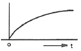
- 비례 요소
- 1차 지연 요소
- 적분 요소
- 미분 요소
(정답률: 68%)
52. 그림과 같은 논리 입력에 대한 출력은? (단, R≠0)
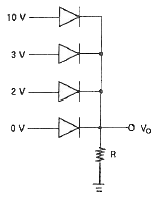
- 15[V]
- 10[V]
- 5[V]
- 0[V]
(정답률: 62%)
53. 시퀀스 제어회로에서 입력에 의해 작동된 후 입력을 제거하여도 계속 작동되는 회로는?
- 자기유지회로
- 인터록회로
- 수동복귀회로
- 타이머회로
(정답률: 82%)
54. 옴의 법칙(Ohm’s law)에 관한 설명 중 옳은 것은?
- 전압은 저항에 반비례한다.
- 전압은 전류에 반비례한다.
- 전압은 전류에 비례한다.
- 전압은 전류의 2승에 비례한다.
(정답률: 70%)
55. 기준량을 준비하고 이것을 피측정량과 평행시켜 기준량의 크기로부터 피측정량을 간접적으로 알아내는 방법은?
- 편위법
- 영위법
- 치환법
- 보상법
(정답률: 59%)
56. 동일 거리를 나가는데 요하는 초음파 펄스의 흐름과 같은 방향과 반대 방향의 시간차에 의해 평균 유속을 구하는 싱 어라운드(sing around)법을 측정 원리로 하는 유량계는?
- 초음파식 유량계
- 터빈식 유량계
- 와류식 유량계
- 용적식 유량계
(정답률: 72%)
57. 직류 전동기의 속도 제어법이 아닌 것은?
- 계자 제어법
- 저항 제어법
- 극수 제어법
- 전압 제어법
(정답률: 63%)
58. 온도 변화기에 요구되는 기능으로 옳은 것은?
- mA 레벨 신호를 안정하게 낮은 레벨까지 증폭할 수 있을 것
- 입력 임피던스(impedance)가 높고 장거리 전송이 가능할 것
- 입출력 간은 교류적으로 절연되어 있을 것
- 온도와 출력 신호의 관계를 비직선화 시킬 수 있을 것
(정답률: 56%)
59. 다음 중 연상 증폭기의 심벌은?
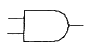
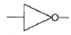
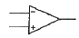
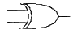
(정답률: 77%)
60. PLC의 구성 중 입력(input)측에 해당되지 않는 것은?
- 센서
- 푸시버튼 스위치
- 열동 과전류 계전기의 접점
- 전자접촉기
(정답률: 51%)
4과목: 기계정비 일반
61. 임펠러(impeller) 흡입구에 의하여 송풍기를 분류한 것이 아닌 것은?
- 편 흡입형
- 양 흡입형
- 구름체 흡입형
- 양쪽 흐름 다단형
(정답률: 70%)
62. 고착 또는 부러진 볼트의 분해법으로 거리가 먼 것은?
- 너트를 두드려 푸는 방법
- 너트를 잘라 넓히는 방법
- 가스 용접기로 가열하는 방법
- 스크루 엑스트랙터를 사용하는 방법
(정답률: 66%)
63. V 벨트에 대한 설명으로 틀린 것은?
- V 벨트는 속도비가 큰 경우의 동력전달에 좋다.
- 비교적 작은 장력으로써 큰 회전력을 얻을 수 있다.
- V 벨트의 종류에는 A, B, C, D, E의 다섯 가지만 있다.
- V 벨트는 사다리꼴의 단면을 가지고, 이음매가 없는 고리 모양이다.
(정답률: 83%)
64. 다음 중 전동기 기동불능의 원인이 아닌 것은?
- 전선의 단선
- 과부하계전기의 작동
- 기계적 과부하
- 정전류 및 정전압 발생
(정답률: 65%)
65. 기어 피치원의 지름을 D, 원주피치를 P라고 하면 기어의 잇수 Z를 구하는 식은?
- Z = πD / P
- Z = 25.4 / PD
- Z = 25.4π / P
- Z = D / πP
(정답률: 68%)
66. 펌프 성능에 관한 몇 가지 일반원리를 나타낼 수 있는 성능곡선에 나타나지 않는 성능 값은?
- 효율
- 축동력
- 전양정
- 비교회전도
(정답률: 61%)
67. 고정 커플링 중 원통 커플링에 속하지 않는 것은?
- 머프 커플링
- 플랜지 커플링
- 셀러 커플링
- 마찰원통 커플링
(정답률: 50%)
68. 펌프의 캐비테이션 방지책으로 적합한 것은?
- 펌프의 흡입양정을 되도록 높게 한다.
- 펌프의 회전속도를 되도록 높게 한다.
- 단 흡입 펌프이면 양 흡입 펌프로 사용한다.
- 유효흡입수두를 필요흡입수두보다 작게 한다.
(정답률: 73%)
69. 기계 운전 중에 가장 양호한 동심상태를 유지하기 위한 작업은?
- 분해작업
- 센터링작업
- 끼워맞춤작업
- 열박음작업
(정답률: 79%)
70. 사이클로이드 감속기의 윤활 방법 중 옳은 것은?
- 1kW 이하의 소형에는 그리스, 그 이상의 것은 적하급유 방법이 쓰인다.
- 1kW 이하의 소형에는 적하급유 방법, 그 이상의 것은 그리스가 사용된다.
- 1kW 이하의 소형에는 그리스, 그 이상의 것은 유욕(油慾) 윤활방법이 쓰인다.
- 1kW 이하의 소형에는 유욕(油慾) 윤활방법, 그 이상의 것은 그리스가 사용된다.
(정답률: 67%)
71. 수도, 가스, 배수관 등에 사용되고 있는 주철관이 강관에 비하여 우수한 점은?
- 충격에 강하고 수명이 길다.
- 내식성이 우수하고 가격이 저렴하다.
- 비중이 작고 높은 내압에 잘 견딘다.
- 내약품성, 열전도성, 용접성이 좋다.
(정답률: 80%)
72. 다단 원심 펌프에서 수평 분할형과 수직 분할형에 대한 설명 중 옳은 것은?
- 수평 분할형은 분해점검이 약간 불편하나 고압 용기에 적당하다.
- 수직 분할형은 분해점검이 약간 불편하며 고압 용기에 부적당하다.
- 수직 분할형은 분해점검이 쉬우나 고압일 경우에는 위아래 면이 누설되기 쉽다.
- 수평 분할형은 분해점검이 쉬우나 고압일 경우에는 위아래 면이 누설되기 쉽다.
(정답률: 52%)
73. 관의 이음에서 분해조립이 편리하고 산업배관에 많이 사용되며, 관의 직경이 비교적 클 경우, 내압이 높을 경우에 볼트와 너트를 사용하는 이음은?
- 신축 이음
- 유니언 이음
- 플랜지 이음
- 턱걸이 이음
(정답률: 69%)
74. 밸브 판이 흐림에 대하여 직각으로 놓여 지며, 밸브 시트에 대하여 미끄럼 운동을 하는 구조이며, 흐름에 대한 유체의 저항이 적은 밸브는?
- 스톱 밸브
- 슬루스 밸브
- 감압 밸브
- 글로브 밸브
(정답률: 76%)
75. 일반적으로 베어링 끼워맞춤 시 올바른 방법은?
- 내륜과 축의 중간 끼워맞춤
- 내륜과 축의 헐거운 끼워맞춤
- 외륜과 하우징의 억지 끼워맞춤
- 외륜과 하우징의 헐거운 끼워맞춤
(정답률: 55%)
76. 기어 손상의 분류 중 피칭과 관련이 있는 것은?
- 마모
- 소성항복
- 용착
- 표면피로
(정답률: 64%)
77. 키 맞춤을 위해 보스의 구멍 지름을 포함한 홈의 깊이를 측정할 때 적합한 측정기는?
- 강철자
- 마이크로미터
- 틈새게이지
- 버니어 캘리퍼스
(정답률: 76%)
78. 기어 감속기 중 평행축형 감속기가 아닌 것은?
- 웜 기어 감속기
- 스퍼 기어 감속기
- 헬러컬 기어 감속기
- 더블 헬리컬 기어 감속기
(정답률: 73%)
79. 유체의 역류를 방지하기 위하여 사용되는 밸브는?
- 볼 밸브
- 체크 밸브
- 앵글 밸브
- 글로브 밸브
(정답률: 80%)
80. 무거운 기계나 전동기를 들어 올릴 때 로프, 체인, 훅 등을 거는데 사용되는 볼트는?
- 아이볼트
- 충격볼트
- 기초볼트
- 스테이볼트
(정답률: 71%)